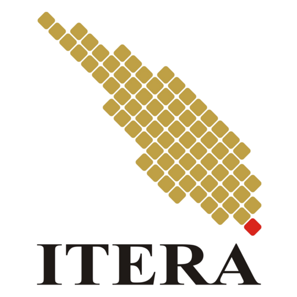

Itera dan BPBD Lampung Uji Kesiapsiagaan Banjir di Lampung Selatan
Institut Teknologi Sumatera bersama BPBD Lampung melaksanakan kegiatan untuk menguji kesiapsiagaan dalam menghadapi bencana banjir di wilayah Lampung Selatan.
ITERA

Institut Teknologi Sumatera, disingkat ITERA, adalah perguruan tinggi negeri yang berada di Provinsi Lampung, Pulau Sumatra. Lokasi ITERA berada di antara wilayah Kabupaten Lampung Selatan dan Kota Bandar Lampung.
ITERA didirikan berdasarkan Peraturan Presiden Nomor 124 Tahun 2014 tentang Pendirian Institut Teknologi Sumatera. Peraturan tersebut ditetapkan pada tanggal 6 Oktober 2014 dan diundangkan pada tanggal 9 Oktober 2014.
Walaupun ITERA diresmikan pada tahun 2014, kegiatan akademik telah dimulai dengan menerima mahasiswa baru sejak tahun 2012-2013.
Institut Teknologi Sumatera bersama BPBD Lampung melaksanakan kegiatan untuk menguji kesiapsiagaan dalam menghadapi bencana banjir di wilayah Lampung Selatan.
Tim PKM Institut Teknologi Sumatera mengenalkan teknologi Internet of Things atau IoT kepada siswa SMKN 7 Bandar Lampung melalui kegiatan edukasi dan pengenalan teknologi.
Program Studi Teknik Biomedis ITERA memberikan pelatihan kepada siswa SMK PGRI Pasir Sakti mengenai penggunaan teknologi 3D printing.
ITERA melakukan persiapan menyambut semester gasal dengan mendorong peningkatan mutu perkuliahan serta kompetensi dosen.
Pada tanggal 6 Oktober 2014, Presiden Republik Indonesia meresmikan Institut Teknologi Sumatera (ITERA) di Kabupaten Lampung Selatan sebagai perguruan tinggi negeri.
ITERA dirintis, dikembangkan, dan dibina oleh Institut Teknologi Bandung (ITB) selama 10 tahun dengan kualitas minimal setara dengan ITB.
Program studi yang diselenggarakan ITERA ditujukan untuk memenuhi kebutuhan tenaga sarjana di Indonesia, khususnya di wilayah Sumatera.
Pendirian ITERA juga berkaitan dengan kebutuhan peningkatan dan pemerataan kualitas sumber daya manusia di bidang sains, teknologi, dan seni.
Menjadi perguruan tinggi yang unggul, bermartabat, mandiri, dan diakui dunia, serta berkontribusi dalam perubahan yang mampu meningkatkan kesejahteraan bangsa Indonesia dan dunia dengan memberdayakan potensi yang ada di wilayah Sumatera dan sekitarnya.
1. Bentuk Pulau Sumatera
72 bujur sangkar berwarna kuning emas dan 1 bujur sangkar berwarna merah membentuk Pulau Sumatera. Hal ini memiliki makna bahwa ITERA merupakan milik seluruh provinsi yang ada di Pulau Sumatera.
2. Warna Kuning Emas
Warna kuning emas memiliki makna keunggulan dan mutu tinggi ITERA dalam menyelenggarakan pendidikan di bidang teknologi, ilmu pengetahuan, seni, dan kemanusiaan.
3. Warna Merah
Warna merah memiliki makna keberanian dan inovasi, kepeloporan, serta ketangguhan ITERA dalam mengantarkan bangsa Indonesia ke kancah dunia melalui pendidikan yang bermartabat.
Memajukan, mengembangkan, dan menyebarluaskan ilmu pengetahuan, teknologi, seni, dan ilmu kemanusiaan untuk meningkatkan kesejahteraan penduduk Sumatera khususnya dan bangsa Indonesia, sejalan dengan dinamika masyarakat Indonesia serta masyarakat dunia, dengan tetap menjunjung tinggi nilai-nilai sosial, kemanusiaan, dan lingkungan melalui wahana Tridharma perguruan tinggi.
Dengan penugasan ITB untuk melahirkan Institut Teknologi Sumatera, ITERA diharapkan menjadi perguruan tinggi dengan reputasi dan kualitas yang mendekati ITB.
ITERA mempunyai tugas menyelenggarakan pendidikan akademik dan dapat menyelenggarakan pendidikan vokasi dalam sejumlah rumpun ilmu pengetahuan dan/atau teknologi tertentu serta, jika memenuhi syarat, dapat menyelenggarakan pendidikan profesi.
Kampus ITERA berada di antara wilayah Kabupaten Lampung Selatan dengan Kota Bandar Lampung.
Jalan Terusan Ryacudu, Way Hui, Kecamatan Jati Agung, Lampung Selatan 35365Struktur organisasi Institut Teknologi Sumatera terdiri dari unsur pimpinan, fakultas, lembaga, unit pelaksana akademik, dan unit pendukung lainnya.
Informasi lengkap mengenai struktur organisasi ITERA dapat dilihat melalui halaman resmi Struktur Organisasi ITERA.
Lihat Struktur Organisasi ITERARencana Strategis (Renstra) ITERA merupakan dokumen yang menjadi pedoman dalam perencanaan dan pengembangan Institut Teknologi Sumatera.
Renstra digunakan sebagai acuan dalam menentukan arah, tujuan, dan program pengembangan ITERA.
| Fakultas Sains | Fakultas Teknologi Infrastruktur Kewilayahan | Fakultas Teknologi Industri |
|---|---|---|
| 1. Program Studi Fisika | 1. Program Studi Teknik Geomatika | 1. Program Studi Teknik Elektro |
| 2. Program Studi Matematika | 2. Program Studi Perencanaan Wilayah dan Kota | 2. Program Studi Teknik Geofisika |
| 3. Program Studi Biologi | 3. Program Studi Teknik Sipil | 3. Program Studi Teknik Informatika |
| 4. Program Studi Kimia | 4. Program Studi Arsitektur | 4. Program Studi Teknik Geologi |
| 5. Program Studi Farmasi | 5. Program Studi Teknik Lingkungan | 5. Program Studi Teknik Mesin |
| 6. Program Studi Sains Atmosfer dan Keplanetan | 6. Program Studi Teknik Kelautan | 6. Program Studi Teknik Industri |
| 7. Program Studi Sains Aktuaria | 7. Program Studi Desain Komunikasi Visual | 7. Program Studi Teknik Kimia |
| 8. Program Studi Sains Data | 8. Program Studi Arsitektur Lanskap | 8. Program Studi Teknik Fisika |
| 9. Program Studi Teknik Perkeretaapian | 9. Program Studi Teknik Biosistem | |
| 10. Program Studi Teknologi Pangan | ||
| 11. Program Studi Teknik Sistem Energi | ||
| 12. Program Studi Teknik Pertambangan | ||
| 13. Program Studi Teknik Material | ||
| 14. Program Studi Teknik Telekomunikasi | ||
| 15. Program Studi Rekayasa Kehutanan | ||
| 16. Program Studi Teknik Biomedik |
Informasi mengenai beasiswa bagi mahasiswa Institut Teknologi Sumatera dapat diakses melalui halaman resmi ITERA.